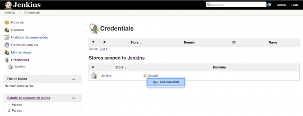
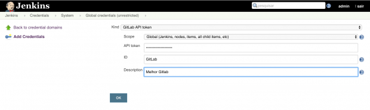
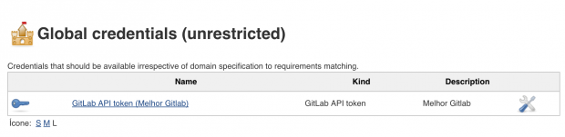
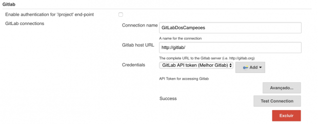
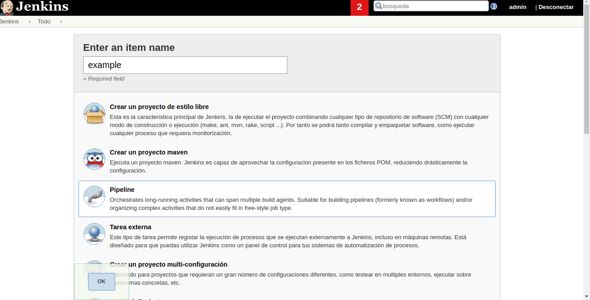
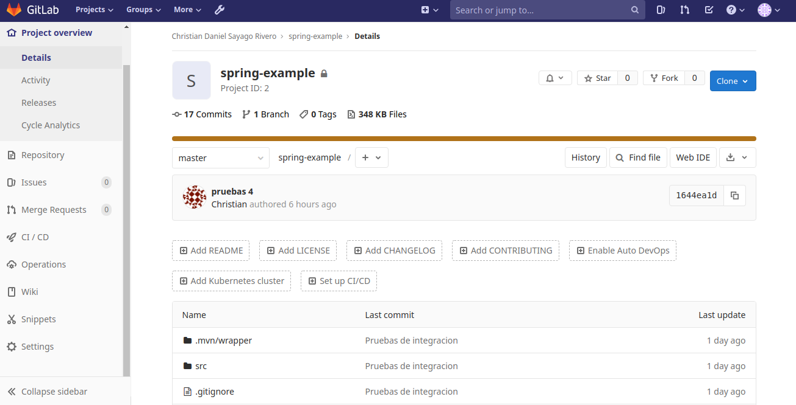
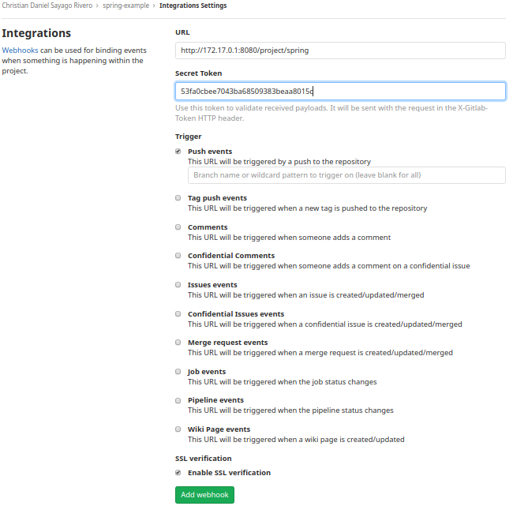
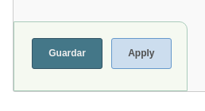
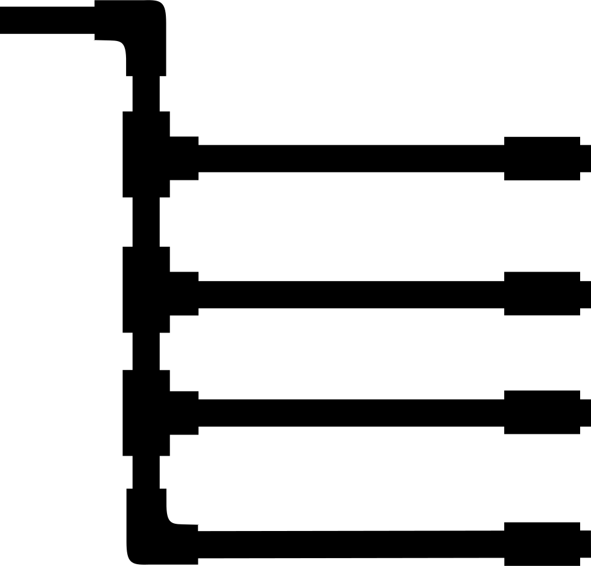
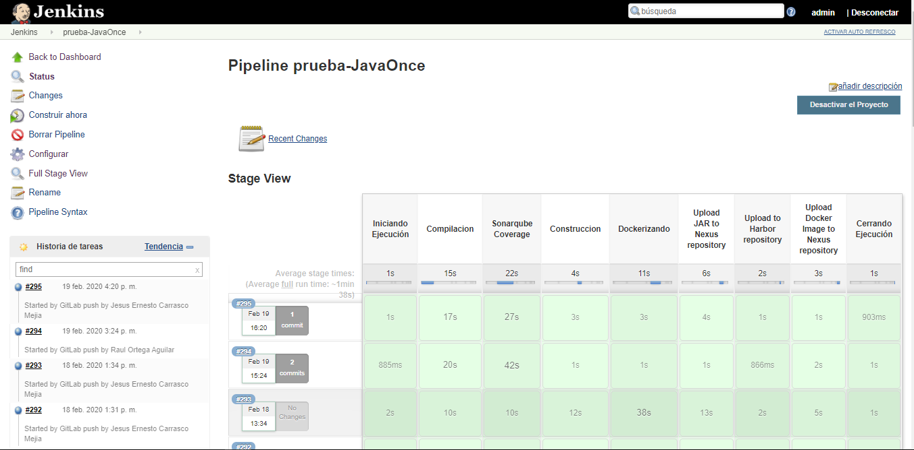

Instalación
| Fedora | Linux |
| $ wget -O /etc/yum.repos.d/jenkins.repo http://pkg.jenkins-ci.org/redhat-stable/jenkins.repo | $ wget -q -O - https://pkg.jenkins.io/debian/jenkins-ci.org.key | sudo apt-key add - |
| $ rpm --import https://jenkins-ci.org/redhat/jenkins-ci.org.key | $ sudo sh -c 'echo deb http://pkg.jenkins.io/debian-stable binary/ > /etc/apt/sources.list.d/jenkins.list' |
| $ yum update | $ sudo apt-get update |
| $ yum install jenkins | $ sudo apt-get install jenkins |
Plugins utilizados
| Git Plugin | Gitlab | Sonarqube | Docker Plugin | Cucumber Reports |
| NodeJS | Artifactory Plugin | Build Timeout | Gradle Plugin | JaCoCo |
| JQuery | JUnit Plugin | Kubernetes | Logstash | Maven Integration |
| OpenJDK-native-plugin | Pipeline | Pipeline Agregator View | Pipeline: Declarative | Quality Gates Plugin |
Primeros pasos...
Al acceder a Jenkins, una vez teniendo en mano el acces token que se genero desde Gitlab es necesario agregar la credencial de acceso para su exitosa comunicación y de esta manera lograr la conexión de ambos. De esta manera sera agregada esta configuracion tal cual lo muestran las imagenes siguientes...
Nos dirigimos al apartado de credenciales
Agregar Token
El token obtenido en gitlab es necesario para esta parte ya que es el acceso a jenkins desde gitlab para asi realizar la conexion de ambas tecnologias, en este apartado es recomendable colocar un ID y descripcion de que tipo es esta credencial ya que manejaremos diversas credenciales.
Debe dar una credencial asi como el ejemplo:
Configuracion-Jenkins-gitlab
Nos dirigimos al apartado de [Aministrar Jenkins] --> [Configurar Sistema] --> [Gitlab]
En la opcion credentials debe ser la agregada anteriormente.
Agregar un espacio de trabajo.
Regresamos al dashboard de jenkins, es hora de crear una nueva tarea.
Creada la tarea nos mandara a configurar los procesos de jenkins en el proyecto.
En la pestaña General aparecera en Gitlab Connection la credencial por default antes agregada.
En la pestaña triggers solo debe seleccionarse la casilla:
Build when a change is pushed to GitLab. GitLab webhook URL:
http://172.17.0.1:8080/project/spring (Nota: El link varia depende el host en el que este
montado)
Es importante tomar en cuenta esta URL y el token que se genera, ya que estas seran ingresadas
en la configuración del proyecto guardado en Gitlab
La configuracion de estas debe estar en Gitlab ubicados en nuestro proyecto, en el cual es necesario ir a [Settings] ---> [Integrations]
Una vez dentro de esta opción tendremos que copiar y pegar la URL y el Token obtenidos para crear el Webhook correspondiente para que se genere la conexion y ejecute el pipeline que debe estar dentro de nuestro proyecto.
Pulsamos en Add Webhook para guardar nuestro puente de conexión, el cual nos servira al momento de realizar un commit y push jenkins de esta manera pueda detectar que hubo cambios y comienze a ejecutar el Jenkinsfile (Pipeline).
Regresamos a la terminación de configuracion
El siguiente paso es simplemente Guardar las configuraciones.
Ejemplo de Pipeline para proyecto Spring boot 
node {
/*Se define el nombre y version de la aplicacion para docker*/
def pom = readMavenPom file: 'pom.xml'
def developmentArtifactVersion = "${pom.version}"
def jarName = "${pom.name}"
def
cleanVersion=developmentArtifactVersion.replaceAll("-SNAPSHOT","");
/* Se imprime el nombre con el que se realizara un Tag */
echo "$jarName"
/* Se define en este caso la version de Java para el proyecto */
jdk = tool name: 'JDK_11'env.JAVA_HOME = "${jdk}"
echo "jdk installation path is: ${jdk}"
sh "${jdk}/bin/java -version"
sh '$JAVA_HOME/bin/java -version'
checkout scm
/* Las siguientes lineas, son dedicadas para obtener el commit del log, en este caso validaremos con el commit una etiqueta que entrara en el filtro para ejecutar ciertos escenarios. En el caso de un comentario sin etiqueta realizara los procesos de solamente Desarrollo y por lo contrario al hacer un commit pero con la etiqueta [prod] en el comentario, comenzara el proceso completo para Productivo. */
def result = sh (script: 'git log -1 --pretty=%B ${GIT_COMMIT}', returnStdout: true).trim()def dev = sh (script: "git log -1 | grep '.*\\[prod\\].*'", returnStatus: true)
/*Imprimimos el valor agregado a las variables*/
echo "Commit Message: $result"echo "Variable dev: $dev"
/*Comienza el filtro de lo anterior comentado*/ /*En caso de que encuentre en el commit el tag [prod], este agregara un numero 0 y comenzara el proceso de los stages de Produccion y de lo contrario los procesos de develoop*/
if (dev != 1) {
Desde Aqui Comienza los escenarios para Productivo
echo "Produccion Stages..."stage('Iniciando Ejecución'){
echo 'Tardara unos minutos... '
}
stage('Compilacion'){
sh 'java -version'
echo 'Limpiando y Compilando aplicacion'
sh 'mvn clean package'
}
stage('Sonarqube Coverage'){
echo 'Calidad de codigo'
sh 'mvn sonar:sonar -Dsonar.host.url=http://10.51.251.49:9000 -Dsonar.login=d8d78be189c327a67dd7da4626686a7197674164'
}
stage('Construccion'){
echo 'Creando JAR'
sh 'mvn install -Dmaven.test.skip=true'
}
stage('Dockerizando'){
echo 'Dockerizando aplicacion'
sh 'docker images'
sh 'docker ps'
sh "mvn package dockerfile:build"
}
stage('Upload JAR to Nexus repository'){
echo 'Subiendo JAR'
sh 'mvn deploy'
}
stage('Upload to Harbor repository'){
echo 'Subiendo a Harbor'
sh "docker login -u b366944 -p Promociones123 reg.bazops.corp"
sh "docker push reg.bazops.corp/cyc-msorques-test/$jarName:$developmentArtifactVersion"
}
stage('Upload Docker Image to Nexus repository'){
echo 'tag Image'
sh "docker tag reg.bazops.corp/cyc-msorques-test/$jarName:$developmentArtifactVersion 10.51.251.49:8082/reg.bazops.corp/cyc-msorques-test/$jarName"
echo 'Subiendo Imagen docker'
sh "docker push 10.51.251.49:8082/reg.bazops.corp/cyc-msorques-test/$jarName"
sh "docker rmi -f 10.51.251.49:8082/reg.bazops.corp/cyc-msorques-test/$jarName"
}
stage('Cerrando Ejecución'){
echo 'Completado'
}
} else {
/* Desde Aqui Comienza los escenarios para Desarrollo el cual Inhabilita algunos escenarios*/
echo "Develoop Stages..."stage('Iniciando Ejecución'){
echo 'Tardara unos minutos...'
}
stage('Compilacion'){
sh 'java -version'
echo 'Limpiando y Compilando aplicacion'
sh 'mvn clean package'
}
stage('Sonarqube Coverage'){
echo 'Calificando codigo'
sh 'mvn sonar:sonar -Dsonar.host.url=http://10.51.251.49:9000-Dsonar.login=d8d78be189c327a67dd7da4626686a7197674164'
}
stage('Construccion'){
echo '******************Inhabilitado**********************'
}
stage('Dockerizando'){
echo '******************Inhabilitado**********************'
}
stage('Upload JAR to Nexus repository'){
echo '******************Inhabilitado**********************'
}
stage('Upload to Harbor repository'){
echo '******************Inhabilitado**********************'
}
stage('Upload Docker Image to Nexus repository'){
echo '******************Inhabilitado**********************'
}
stage('Cerrando Ejecución'){
echo 'Completado'
}
}
}
Una vez hecho un push comenzara a ejecutar los pasos establecidos en el Jenkinsfile si es todo correcto pintara el Stage View en verde pero en caso de algun fallo debera mandarlo de color Rojo.
